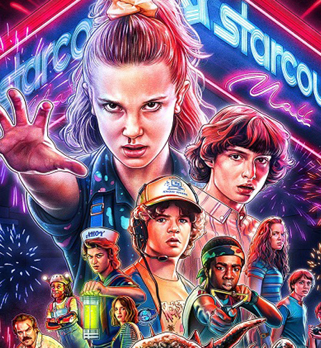
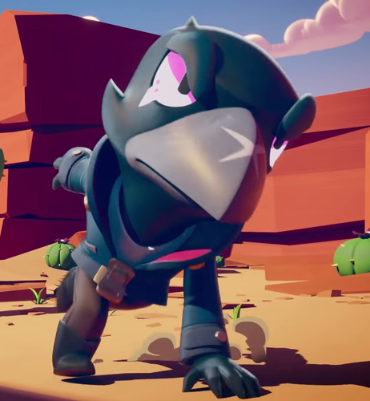
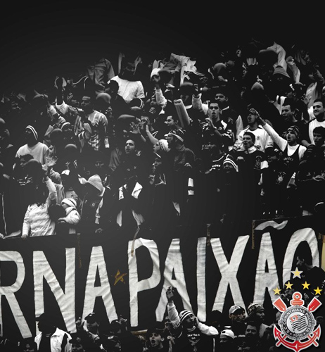
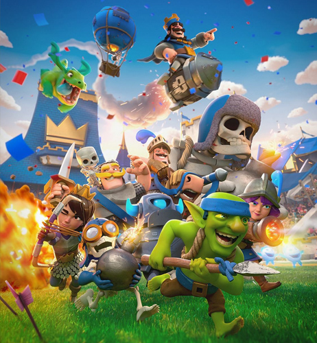
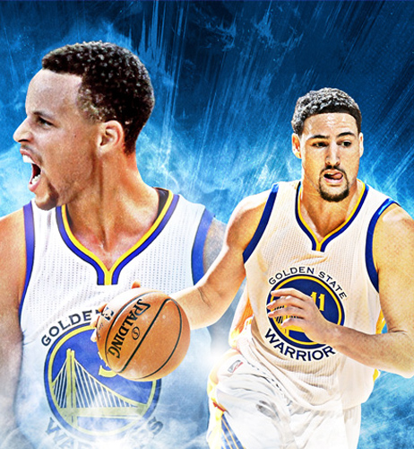

Um pouco mais sobre mim...
Apaixonado pelo Corinthians e mais recentemente pelo Golden State Warriors, também carrego um carinho pela F1 por sempre ter morado na região próximo ao autódromo de Interlagos. Gosto daquele dia ensolarado com céu azul (top!), cervejinha, petiscos, de preferência com a presença de familiares e amigos. Curto jogar video game, assistir séries (ah, que terceira temporada de Stranger Things e La Casa de Papel !), música eletrônica e algumas outras coisas.

Dia de Sol

Stranger Things

Brawl Stars

Corinthians

Clash Royale
